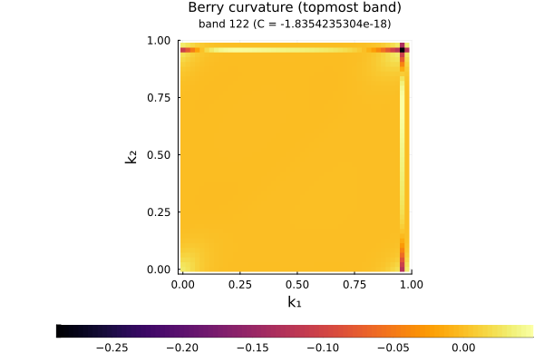
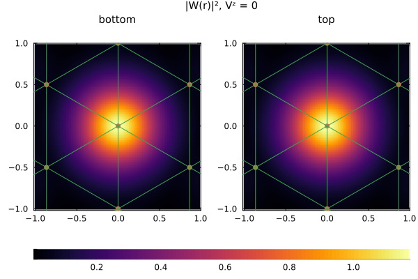
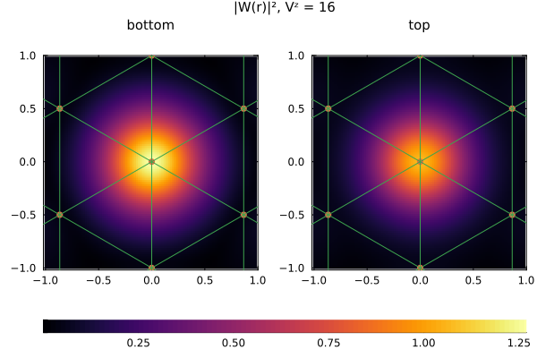
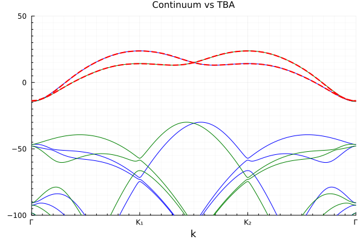
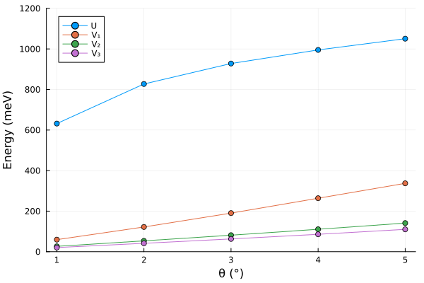

Twisted Homobilayer TMD — Triangular Lattice
Following Phys. Rev. Research 2, 033087 (2020), we study twisted homobilayer WSe₂. The topmost moiré band is topologically trivial and forms an emergent triangular lattice. We demonstrate the full workflow: continuum model → topology → Wannier construction → tight-binding model → Coulomb interaction.
The continuum model of twisted TMD homobilayers [Phys. Rev. Lett. 122, 086402 (2019)] is parameterized by:
| Parameter | Symbol | Units | Description |
|---|---|---|---|
| Lattice constant | $a_0$ | Å | Monolayer lattice constant |
| Effective mass | $m$ | $m_e$ | Conduction band effective mass |
| Twist angle | $\theta$ | ° | Relative twist between layers |
| Displacement field | $V^z$ | meV | Perpendicular displacement field inducing layer-dependent potential |
| Chemical potential | $\mu$ | meV | Chemical potential |
| Moiré potential amplitude | $V$ | meV | Amplitude of the moiré potential |
| Moiré potential phase | $\psi$ | ° | Phase of the moiré potential |
| Interlayer hopping | $w$ | meV | Interlayer hopping amplitude |
Continuum Model
We first construct the continuum model and compute the energy bands for both valleys.
using MoireSuperlattices
using Plots
using QuantumLattices
using TightBindingApproximation
# Construct the continuum model
parameters = (a₀=3.28, m=0.45, θ=4.0, Vᶻ=0.0, μ=0.0, V=4.4, ψ=5.9, w=20.0)
WSe₂ = Algorithm(:WSe₂, BLTMD(values(parameters)...; truncation=4), parameters)
recipls = reciprocals(WSe₂.frontend.reciprocallattice)
# Energy bands at Vᶻ = 0 (both valleys)
bands₁_Vz0 = WSe₂(:EB, EnergyBands(ReciprocalPath(recipls, hexagon"Γ-K₁-K₂-Γ", length=100)))
bands₂_Vz0 = WSe₂(:EB, EnergyBands(ReciprocalPath(recipls, hexagon"Γ-K₂-K₁-Γ", length=100)))
# Tune Vᶻ to 16 meV to lift valley degeneracy
update!(WSe₂; Vᶻ=16.0)
bands₁_Vz16 = WSe₂(:EB, EnergyBands(ReciprocalPath(recipls, hexagon"Γ-K₁-K₂-Γ", length=100)))
bands₂_Vz16 = WSe₂(:EB, EnergyBands(ReciprocalPath(recipls, hexagon"Γ-K₂-K₁-Γ", length=100)))
emin, emax = -100.0, 50.0
# Vᶻ = 0: two-fold valley-degenerate
plt = plot(layout=(1, 2), size=(800, 350))
plot!(plt[1], bands₁_Vz0, ylims=(emin, emax), color="blue", title="")
plot!(plt[1], bands₂_Vz0, ylims=(emin, emax), color="blue", title="Vᶻ = 0")
# Vᶻ = 16 meV: valley splitting visible
plot!(plt[2], bands₁_Vz16, ylims=(emin, emax), color="blue", title="")
plot!(plt[2], bands₂_Vz16, ylims=(emin, emax), color="blue", title="Vᶻ = 16")
At $V^z = 0$ the two valleys are degenerate. A finite displacement field $V^z$ induces a layer-dependent potential that lifts the valley degeneracy.
Topology
We compute the Berry curvature of the topmost band at $V^z = 16$ meV on a 48×48 k-mesh.
berry = WSe₂(:BC, BerryCurvature(BrillouinZone(recipls, 48), [dimension(WSe₂)]))
plot(berry, plot_title="Berry curvature (topmost band)")
The Berry curvature is nearly uniform and integrates to a Chern number $C \approx 0$, confirming the trivial topology.
Wannier Construction
The topmost band is topologically trivial, thus, it forms an emergent triangular lattice (MoireTriangular). We construct the Wannier function with a U(1) gauge fix that makes the bottom-layer component at $\mathbf{r}=0$ real and positive. We show two cases: $V^z = 0$ and $V^z = 16$ meV.
# Vᶻ = 0 case: reset the model parameter
update!(WSe₂; Vᶻ=0.0)
lattice = MoireTriangular()
wannier_Vz0 = MoireWannier(WSe₂, lattice; nk=18)
# Vᶻ = 16 meV case
update!(WSe₂; Vᶻ=16.0)
wannier_Vz16 = MoireWannier(WSe₂, lattice; nk=18)
# Real-space visualization
realzone = RealZone([[1.0, 0.0], [0.0, 1.0]], -1=>1, -1=>1)
plot(realzone, wannier_Vz0, 1; plot_title="|W(r)|², Vᶻ = 0")
plot(realzone, wannier_Vz16, 1; plot_title="|W(r)|², Vᶻ = 16")
$|W(r)|^2$ is equally distributed on both layers when $V^z = 0$, and is partially layer polarized when $V^z \ne 0$.
Hopping Integrals and Tight-Binding Model
From the $V^z = 16$ meV Wannier function, we compute the hopping integrals and automatically generate the tight-binding terms up to 6th neighbor order with terms.
hopping = HoppingIntegral(wannier_Vz16)
tba_terms = terms(hopping; order=6, atol=1e-4, rtol=1e-4)The generated hopping parameters are:
for term in tba_terms
println("$(id(term)) = $(round(value(term); digits=4))")
endt₁ = -3.2048 + 0.0im
λ₁ = -1.1108 + 0.0im
t₂ = -0.2286 + 0.0im
λ₂ = 0.0 + 0.0im
t₃ = -0.3205 + 0.0im
λ₃ = -0.2072 + 0.0im
t₄ = -0.056 + 0.0im
λ₄ = -0.0103 + 0.0im
t₅ = -0.0494 + 0.0im
λ₅ = -0.0502 + 0.0im
t₆ = -0.0171 + 0.0im
λ₆ = 0.0 + 0.0im
μ = 9.7666 + 0.0imHere $t_k$ denotes the spin-independent hopping at the $k$-th neighbor shell, and $\mu$ is the chemical potential. The spin-orbital coupling terms $\lambda_k$ arise from the nonzero $V^z$, which breaks the inversion symmetry but preserves the time-reversal symmetry.
We construct the tight-binding model and compare its energy bands with the continuum model.
hilbert = Hilbert(Fock{:f}(1, 2), length(lattice))
tba = Algorithm(:tba, TBA(lattice, hilbert, tba_terms))
bands_tba = tba(:EB, EnergyBands(ReciprocalPath(recipls, hexagon"Γ-K₁-K₂-Γ", length=100)))
plt = plot()
plot!(plt, bands₁_Vz16, ylims=(emin, emax), color="blue")
plot!(plt, bands₂_Vz16, ylims=(emin, emax), color="green")
plot!(plt, bands_tba, ylims=(emin, emax), ls=:dash, lw=2, color="red", title="Continuum vs TBA")
The tight-binding bands (dashed red) match the continuum model bands (solid blue/green) closely up to the 6th-neighbor truncation.
Coulomb Interaction and Twist-Angle Dependence
We now study how the projected Coulomb interaction depends on the twist angle. The unscreened 2D Coulomb potential is $V(q) = 2\pi e^2 / (\epsilon |q|)$, where $\epsilon$ is the dielectric constant ($\epsilon = 1$ for a free-standing sample) and $e^2 = 14400$ meV·Å. We use BareCoulomb and fix $V^z = 0$.
θs = [1.0, 2.0, 3.0, 4.0, 5.0]
Us, V₁s, V₂s, V₃s = Float64[], Float64[], Float64[], Float64[]
for θ in θs
update!(WSe₂; θ=θ, Vᶻ=0.0)
wannier = MoireWannier(WSe₂, MoireTriangular(); nk=18)
coulomb = CoulombIntegral(wannier)
coulomb_terms = terms(coulomb, BareCoulomb(1.0); order=4, atol=1e-3, rtol=1e-3)
# coulomb_terms[1] = Hubbard U, coulomb_terms[2:end] = Coulomb V₁, V₂, ...
push!(Us, value(coulomb_terms[1]))
push!(V₁s, value(coulomb_terms[2]))
push!(V₂s, value(coulomb_terms[3]))
push!(V₃s, value(coulomb_terms[4]))
end
plt = plot(; ylims=(0, 1200), xlabel="θ (°)", ylabel="Energy (meV)")
plot!(plt, θs, Us; marker=:circle, label="U")
plot!(plt, θs, V₁s; marker=:circle, label="V₁")
plot!(plt, θs, V₂s; marker=:circle, label="V₂")
plot!(plt, θs, V₃s; marker=:circle, label="V₃")
The onsite Hubbard $U$ and extended Coulomb $V_1, V_2, V_3$ all increase with increasing twist angle, as expected from the smaller moiré lattice constant $a_M = a_0 / (2\sin(\theta/2))$.